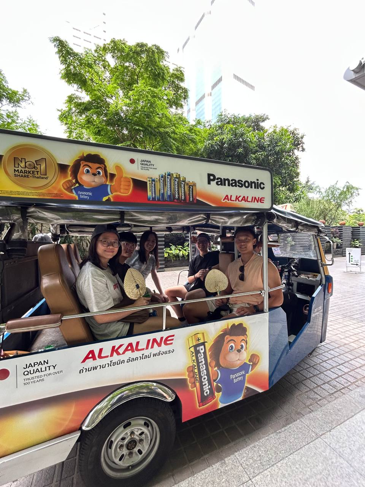

The Experience
Presenting in Bangkok
Our team flew to Bangkok to present our findings directly to HungryHub's team. It was an opportunity to walk real stakeholders through the dashboard, explain the methodology, and receive live feedback on what mattered most to the business.

HungryHub HQ — Bangkok Presentation

Our group riding the Tuk tuk, going on a food tour
Tallest statue of Buddha at Hidden bangkok tour

1st time seeing & trying Red Mango